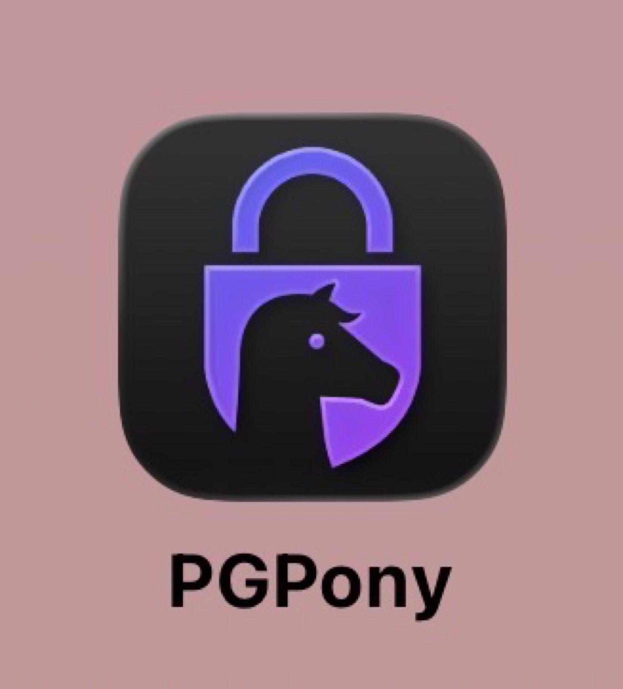

X에서 맞팔하는 어떤 분 글을 읽다가 PGPony라는 앱을 처음 알게 됐다. 처음엔 그냥 스쳐 지나가려고 했는데, 한 문장에서 멈췄다 — 아이폰 안에 YubiKey로 키를 만들어두면, 서명도 암호화도 복호화도 전부 PGPony 하나로, 폰 안에서 완결된다는 얘기였다. (4)편에서 만든 age 방식은 "암호화는 아이폰, 복호화는 맥북/리눅스"로 역할을 나눠야 했는데, 이건 그 경계를 아예 없앤다는 거였다. 읽자마자 설치했다.

PGPony란?
AgePony랑 같은 개발자(Kevin Stewart / NorseHorse)가 만든, iOS용 OpenPGP(PGP/GPG) 암호화 앱이다. 이름도 비슷하고 만든 사람도 같은데, 유비키를 다루는 방식은 완전히 다르다. AgePony가 유비키의 "PIV 애플릿"을 썼다면, PGPony는 "OpenPGP 애플릿"을 NFC로 직접 다룬다. OpenPGP 카드 표준상 서명·암호화·인증용 키를 각각 하나씩, 총 3개까지 올려둘 수 있다.
AgePony와 뭐가 다른가
AgePony(age 방식)는 유비키로 암호화까지는 되는데, 복호화는 PIV 프로토콜(APDU 통신)이 폰에 구현이 안 돼 있어서 안 된다. 그래서 (4)편처럼 PC에 유비키를 꽂고 age-plugin-yubikey로 복호화해야 했다.
PGPony(OpenPGP 방식)는 OpenPGP 스마트카드 프로토콜(APDU, PSO:CDS / DECIPHER 등)을 앱이 직접 구현해서, NFC 태그 한 번으로 서명·암호화·복호화까지 폰에서 전부 끝낸다. 다만 "인증(authentication)" 슬롯을 실제로 활용하는지는 자료상 확실하지 않았다.
주요 기능
- 카드 위에서 직접 키 생성(on-card generation): Ed25519+Cv25519 또는 RSA
- 기존에 쓰던 OpenPGP 카드를 그대로 등록해서 사용 가능
- NFC 태그 + PIN으로 서명(분리서명 / 클리어사인 / 암호화+서명), 복호화
- 카드 관리: 관리자 PIN 변경, PIN 잠금 해제, 카드 초기화
- 패스워드 단독 암호화(
gpg -c호환), 키링 전체 백업/복원
암호화 코어(PGPonyCore)는 GitHub에 Apache-2.0으로 공개돼 있다. 다만 이건 "순수 암호화 로직"만 공개된 거고, 앱 UI·키 저장·전체 로직은 비공개다.
안전성은 어느 정도일까
앱 자체 리뷰는 많지 않지만, 개발자가 실명을 공개하고 있고, Google Play 사용자 리뷰에 직접 답변도 하고, 업데이트도 꾸준히 있었다. 자체 웹사이트(pgpony.app)에 별도 리뷰 페이지도 있다. 실사용자 리뷰 중에는 "앱 전체가 오픈소스가 아니라서 위험에 처한 사람이 신뢰하고 쓰기엔 부족하다"는 지적도 있었다 — 맞는 말이라 새겨들었다.
아이폰의 "앱 개인정보 보호 리포트"로 접속 도메인을 확인할 수는 있지만, 한계가 뚜렷하다.
- 7일 롤링으로만 기록된다
- 도메인만 보이고 실제로 뭘 보냈는지(페이로드)는 안 보인다
- GitHub 같은 정당한 도메인에 데이터를 숨겨 보내도 구분이 안 된다
- 앱 간 공유시트·클립보드·푸시 경로는 리포트에 아예 안 잡힌다
1차 필터는 되지만, 100% 검증 수단은 아니라는 뜻이다.
키가 유출된다면 어떤 경로일까
가능한 시나리오를 세 갈래로 나눠 생각해봤다.
1) 카드 위에서 직접 생성한 키 — 개인키가 카드 밖으로 나온 적이 없기 때문에, 앱이 해킹당해도 복제가 불가능하다. OpenPGP/PIV 표준 자체에 "개인키 export" 명령이 없다. 다만 악성 앱이 "생성(GENERATE)"이 아니라 "가져오기(IMPORT)" 명령으로 자기가 만든 키를 카드에 몰래 주입하고 "카드에서 생성됨"이라고 속일 가능성은 이론상 존재한다 — 앱이 비공개 소스라 사용자가 구분할 방법이 없다.
2) PC에서 만들어 카드로 옮긴 키 — 옮기기 전 짧은 시간 소프트웨어 형태로 PC에 존재하기 때문에, 그 시점에 유출되면 소프트웨어 사본이 만들어질 수 있다.
3) PIN만 유출된 경우 — 키 자체는 안전하지만, 카드를 물리적으로 탈취·분실당하면 PIN으로 악용될 수 있다. 다만 PIN 재시도 횟수 제한(보통 3회)이 있어서 무차별 대입은 막힌다.
결국 "생성" 명령이 진짜 로컬에서 실행됐는지를 신뢰할 수 있느냐가 핵심이다.
더 높은 보안이 필요하다면
정리하면서 내린 결론은, 더 높은 보안이 필요한 상황이라면 에어갭(오프라인) 리눅스에서 GnuPG로 키를 생성하고 keytocard 명령으로 유비키에 이전하는 방식이 PGPony 앱보다 신뢰 경계가 더 명확하다는 거였다. GnuPG는 수십 년간 검증된 오픈소스라 "생성" 명령이 실제로 로컬에서 실행된다는 걸 신뢰할 수 있고, 키가 카드에 올라간 이후에는 하드웨어 설계상 다시 꺼낼 수 없다. 권장 절차는 Tails 같은 라이브 부팅 + 인터넷 완전 차단 + 작업 후 재부팅(메모리 휘발). 다만 유비키 자체 펌웨어도 비공개라서, "제조사 백도어" 수준의 위협모델까지는 어떤 방법으로도 완전히 검증할 수 없다 — 하드웨어 보안키를 쓰는 이상 감수해야 하는 최소한의 신뢰 지점이다.
PGPony 자체는 충분히 매력적이었지만, 정리하다 보니 "지금 당장 편하게 쓸 앱"과 "진짜 중요한 키를 만드는 방법"은 다른 얘기라는 걸 알게 됐다. 그래서 이 결론을 그대로 실행에 옮겨보기로 했다 — 다음 편에서 이어진다.